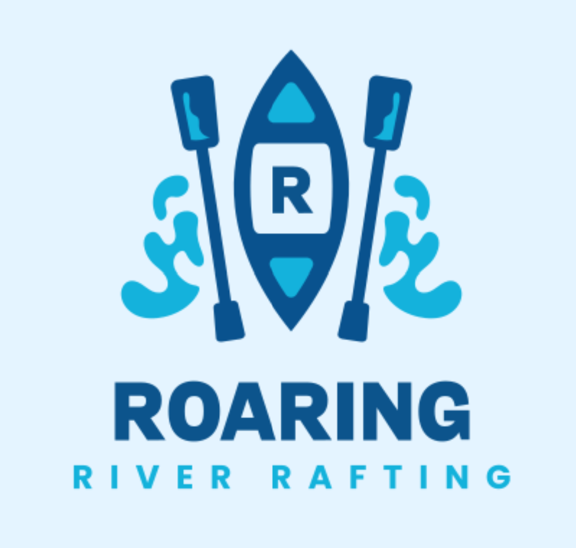

Overview
Purpose
The purpose of this website is to provide information to adventure-seekers about what Roaring River Rafting has to offer, pricing rates for individuals and groups, and so on. This website will allow people to book their adventures ahead of time and reserve availability, as well as see when there's no availability, so that everything can be prepared for them appropriately. We need this website to give people saftey information, booking information, and expectations so they know what they're signing up for and there can be less discrepancies, as well as we can be fully prepared to provide the best service to our guests. This website will help us showcase our values and love for water rating, as well as give people the chance to partake in the fun.
Audience
The intended audience is for any eligible age wanting a new experience or seeking an outdoor water adventure. Ultimately, we hope to enrich the lives of adventure-seekers and give new memories for those looking for something more in this life. Therefore, we want to make the website universally user-friendly to navigate, straight-forward, and to have a clean, simple look that speaks value and invites people of all ages to explore. The colors and fonts will be soft and easy to the eye, and the content will express the types of experiences people can expect to have.
Branding
Website Logo

Style Guide
Color Palette
| Primary | Secondary | Accent 1 | Accent 2 |
|---|---|---|---|
Typography
Heading Font: Verdana
Paragraph Font: Tahoma
Normal paragraph example
The best Whitewater Rafting in Colorado, White Water Rafting Company offers rafting on the Colorado and Roaring Fork Rivers in Glenwood Springs. Since 1974, we have been family owned and operated, rafting the Shoshone section of Glenwood Canyon and beyond.
Colored paragraph example
Trips vary from mild and great for families, to trips exclusively for physically fit and experienced rafters. No matter what type of river adventures you are seeking, White Water Rafting Company can make it happen for you.
Navigation with Hover
Site Map
Wireframes
Home